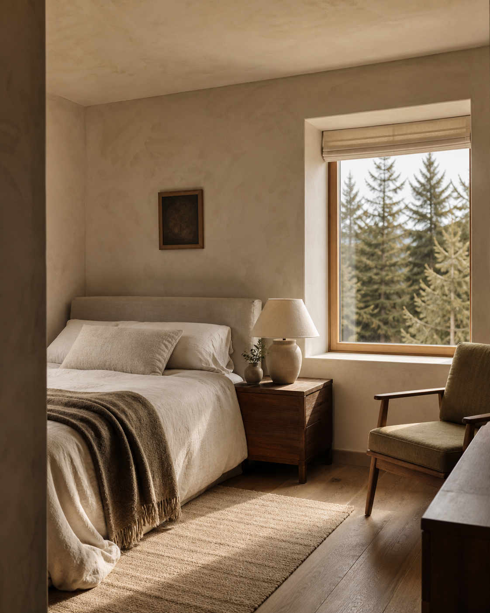
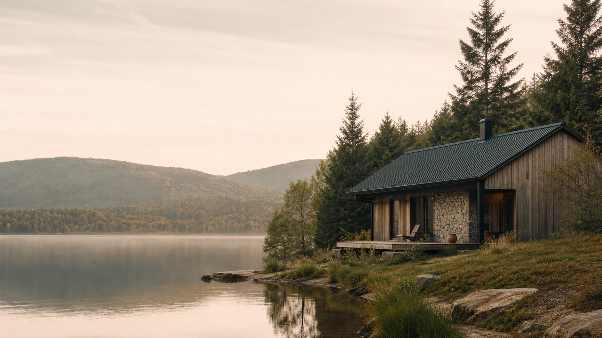
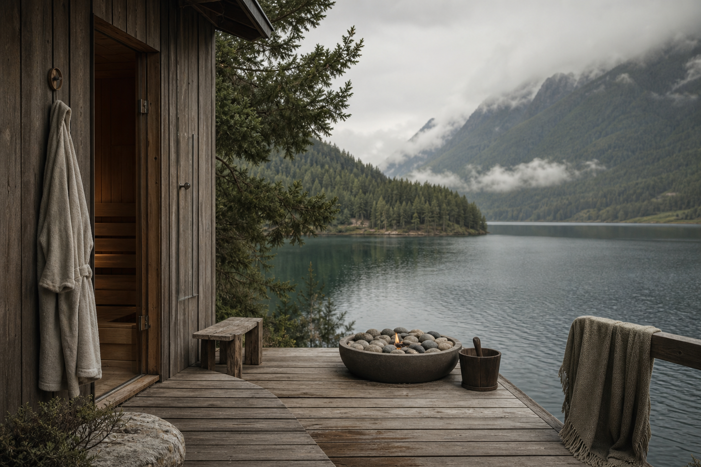

Najczęściej wybieranyBór
Pokój z widokiem na świerki

Beskid Niski · 684 m n.p.m.
Kameralny pensjonat nad jeziorem, gdzie dzień zaczyna się od ciszy, a kończy światłem w oknach.
Poznaj Nórdę ↓Bez karty kredytowej · elastyczne warunki anulacji
Nórda to siedem pokoi, jezioro za progiem i gościnność, która nie potrzebuje wielkich słów. Stworzyliśmy to miejsce dla tych, którzy chcą pobyć bliżej natury — i trochę bliżej siebie.
Rano pachnie kawą i mokrym mchem. Wieczorem na tarasie słychać tylko trzask drewna. Resztę zostawiamy Wam.
Zobacz, co na Ciebie czeka ↗Każdy pokój ma własny rytm, widok i historię. Wspólny jest tylko standard: naturalne materiały, miękka pościel i cisza za oknem.

Najczęściej wybieranyPokój z widokiem na świerki
Poranna kawa nad wodą

Do 4 osóbPrzestronny apartament z tarasem
Nie mamy animacji. Mamy za to ścieżkę, która zaczyna się za domem, saunę z widokiem na jezioro i śniadanie, na które chce się wstać.
Lokalne sery, chleb z pieca i konfitura z derenia.
Rezerwujesz ją tylko dla siebie. Cisza w pakiecie.
Salon z kominkiem, książki i herbata, która nie stygnie.
Jezioro Klimkowskie i Beskid Niski mają swój własny rytm. Podpowiemy, gdzie skręcić, żeby znaleźć najlepszy widok.
Spacer przez bukowy las
Poranek na SUP-ie
Smak, który zostaje
„Przyjechaliśmy na dwie noce, zostaliśmy na pięć. Nórda ma ten rzadki rodzaj spokoju, którego nie da się zaprojektować — można go tylko stworzyć.”
Wybierz termin, a pokażemy Ci dostępne pokoje.
Zobacz pokoje →